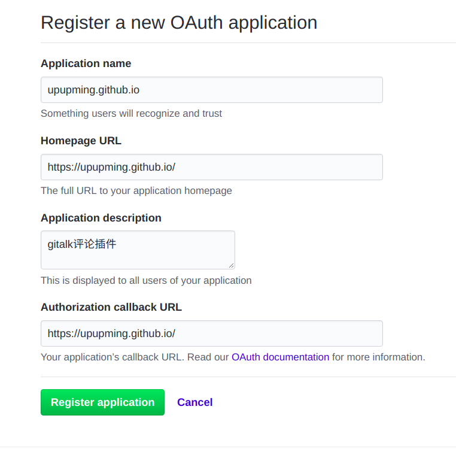
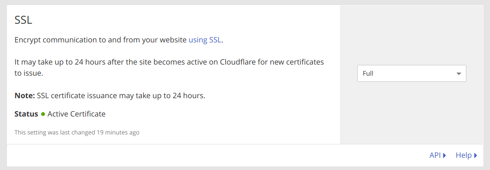
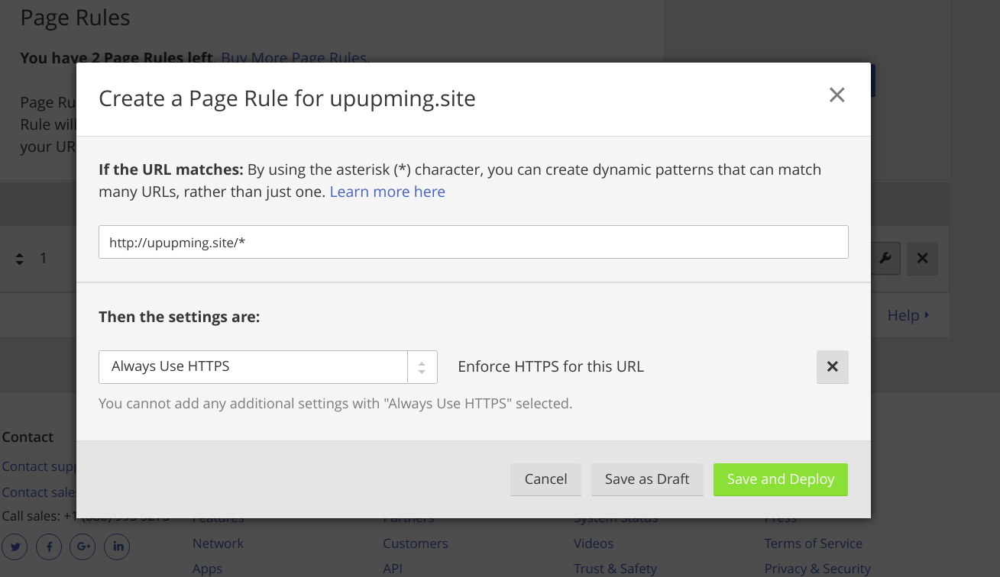

我的 hexo 博客 hello world，探索一些小问题。
Hexo安装
安装过程见Hexo官方文档。
我用的是skapp主题，参见skapp的README文档。
个性化
通过Logo Maker做好自己的Logo，放入/themes/hexo-theme-skapp/source/img/下，这样在后续运行hexo d的时候会在网站根目录生成文件夹/img/，其中包含了自己的Logo。在_config.yml加入绝对引用：
# 网页图标（显示在浏览器Tab上） |
同样可以定义自己的头像、文章默认封面、主页背景、404背景、加载动态图：
qrcode: /img/doraemon.jpeg |
注意必须用绝对路径（即最前面有一个/），如qrcode值若写成img/doraemon.jpeg会导致在归档界面时，头像的路径变成/archives/img/doraemon.jpeg，最终头像无法正确加载。
文章资源文件夹存放文章封面等图片
首先配置_config.yml启用创建文件资源夹，修改post名格式为以创建时间开头：
post_asset_folder: true |
新建文章：
hexo new build-hexo |
在/source/_posts/2018-02-28-build-hexo/中放入cover.png。
在文章中以绝对路径（主页也可以正常显示图片）表示封面目录，如：
--- |
若是文章内图片，无需在主页显示，可直接用相对路径：
例1：
< !-- 使用html语言，支持调整图片大小 --> |
例2：
< !-- 使用Markdown语言，不支持调整图片大小 --> |
创建搜索页面
由于主题自带搜索功能，只需创建serach页面：
hexo new page search |
然后在/source/search/index.md中加入：
layout: search |
安装gitalk评论插件
进入创建OAuth Application，创建如下：

后记：如果要自定义域名（见下一步），要将Authorization callback URL更改为相应的域名（如：https://upupming.site/ ）。
编辑_config.yml：
gitTalk: |
接着运行hexo d配置到github，当有人评论时，在仓库upupming.github.io中会出现新的issue，名为“Hexo配置遇到的问题及解决 | upupming的博客”。
自定义域名，添加https支持（cloudflare）
2018.06.16 更新
请转到 GitHub Pages 自定义域名已支持 https，不必再依赖 Cloudflare
在/source/下加入文件CNAME（在下次hexo d时会生成在网站根目录）内容如下：
upupming.site |
这样访问upupming.github.io时会自动跳转到upupming.site。
为了添加https支持，需要将域名的解析系统从阿里云换成cloudflare。
注册cloudflare，添加域名upupming.site，登录阿里云，修改域名的NameService为cloudflare的域名解析服务：
aida.ns.cloudflare.com |
待到生效后，设置Crypto中的SSL为Full

再添加Page Rules：

为域名upupming.site添加三条解析纪录：
| 记录类型 | 主机记录 | 记录值 | 含义 |
|---|---|---|---|
| CNAME | www | upupming.github.io | 将www子域名跳转到顶级域名 |
| A | @ | 192.30.252.153 | 将顶级域名解析到Github提供的ip |
| A | @ | 192.30.252.154 | 将顶级域名解析到Github提供的ip |